Personal AI agents
are for everyone.…are they, really?
0.0 billion
people live with a disability
can’t type
can’t click
can’t speak
can’t hear
Meet Milo
Type
Speak
Head
Sign
1It shapes itself around you
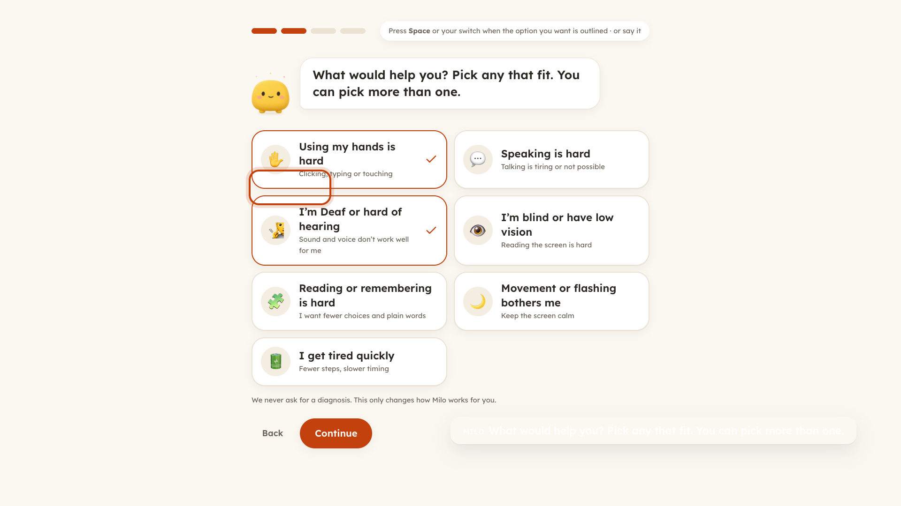
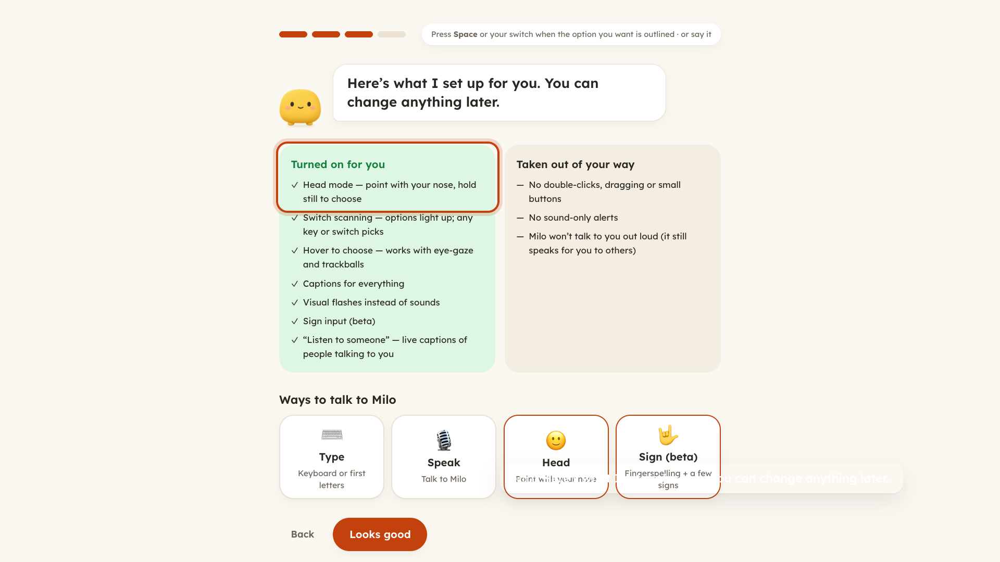
2A few letters is enough
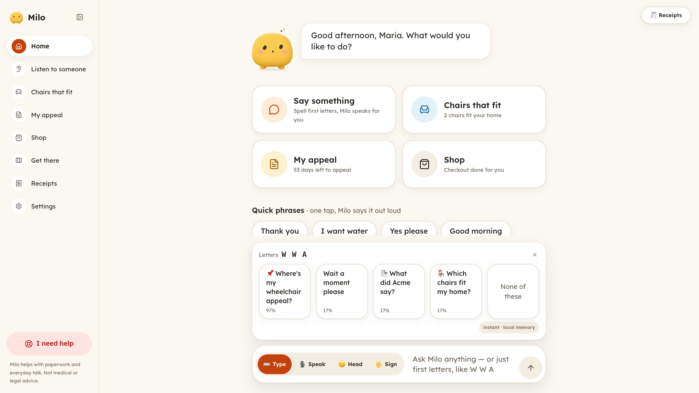
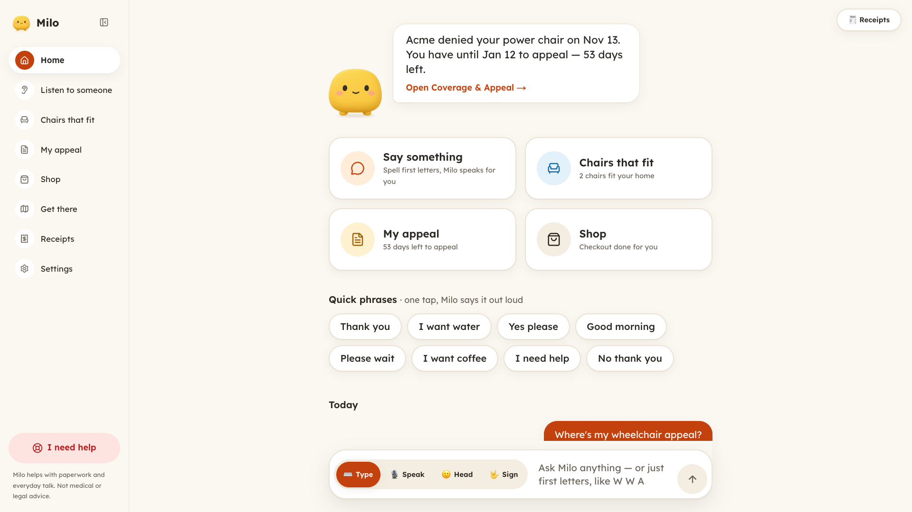
W
W
A
3It knows your chair and your home
doorway · 28″
Standard manual chair24.5″ wide✓ fits through the 28″ door
Power chair29″ wide✕ won’t fit: 29″ > 28″
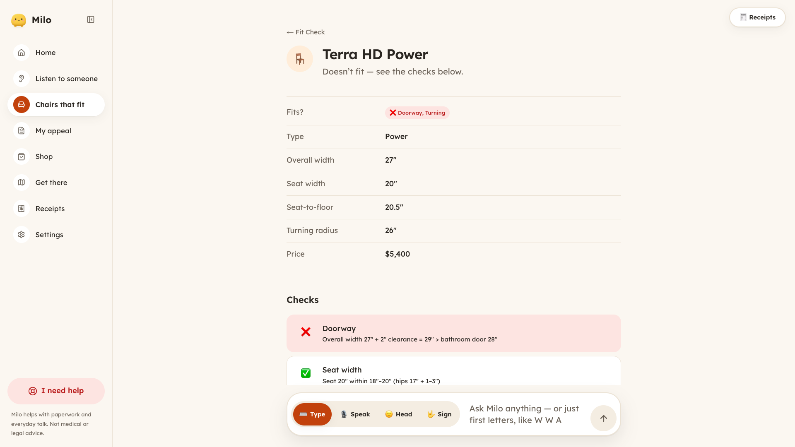
4It fights the paperwork, with receipts
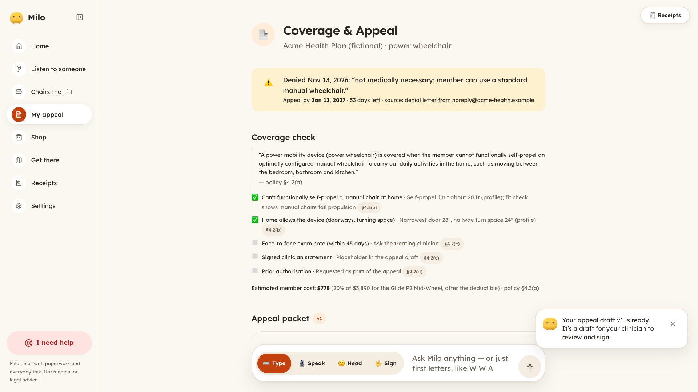
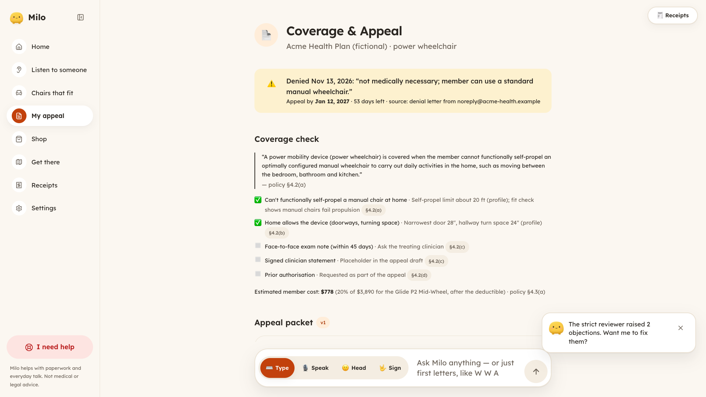
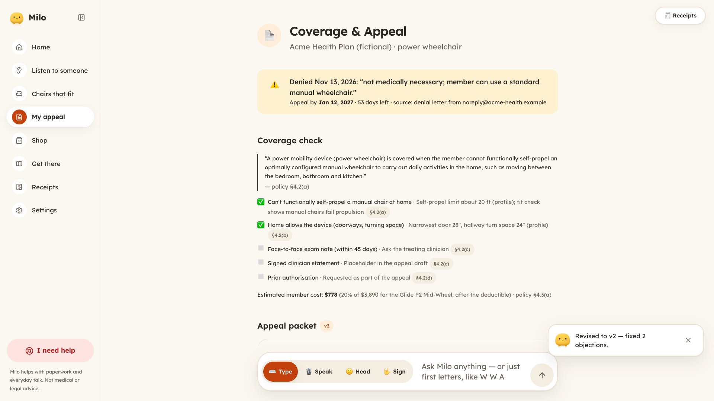
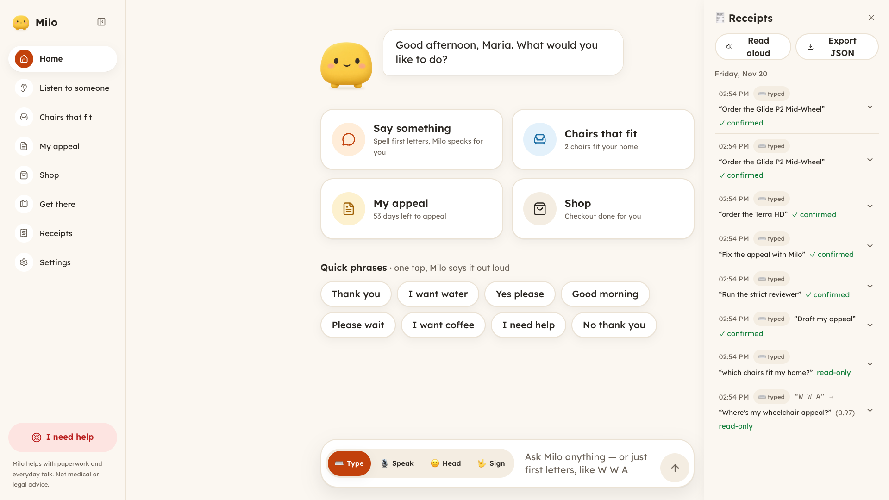
5Safe shopping, with family in the loop
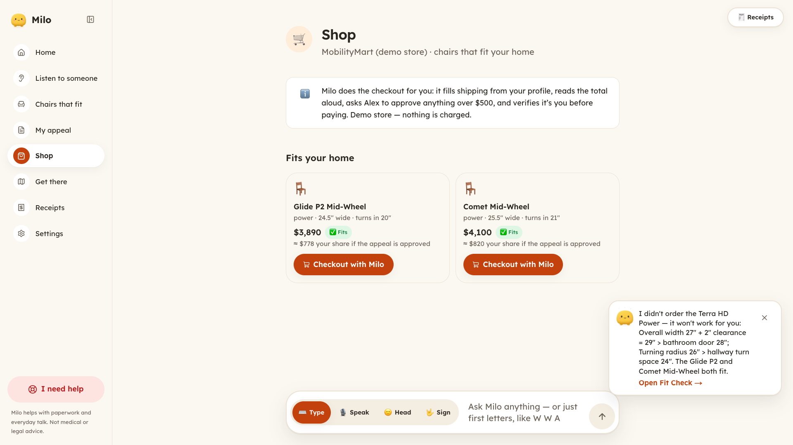
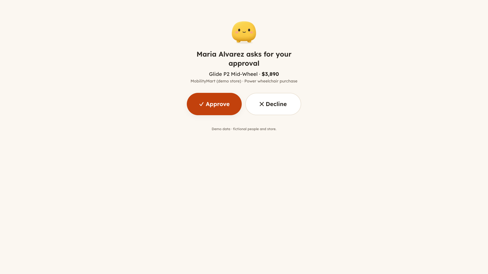
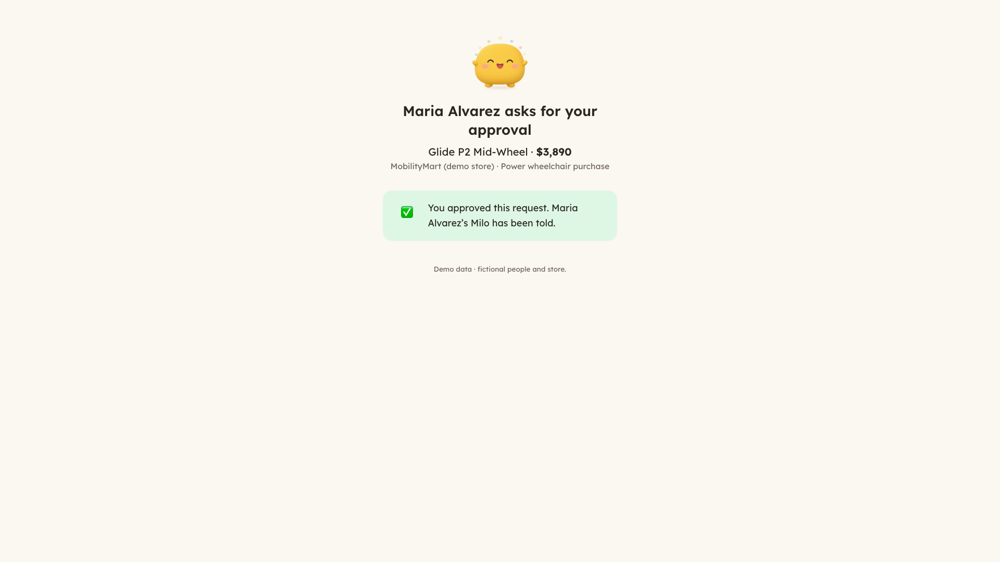
6A route your wheelchair can actually take
Home
Library
✕ Stairs: avoided
✓ Curb ramp
✓ Working elevator
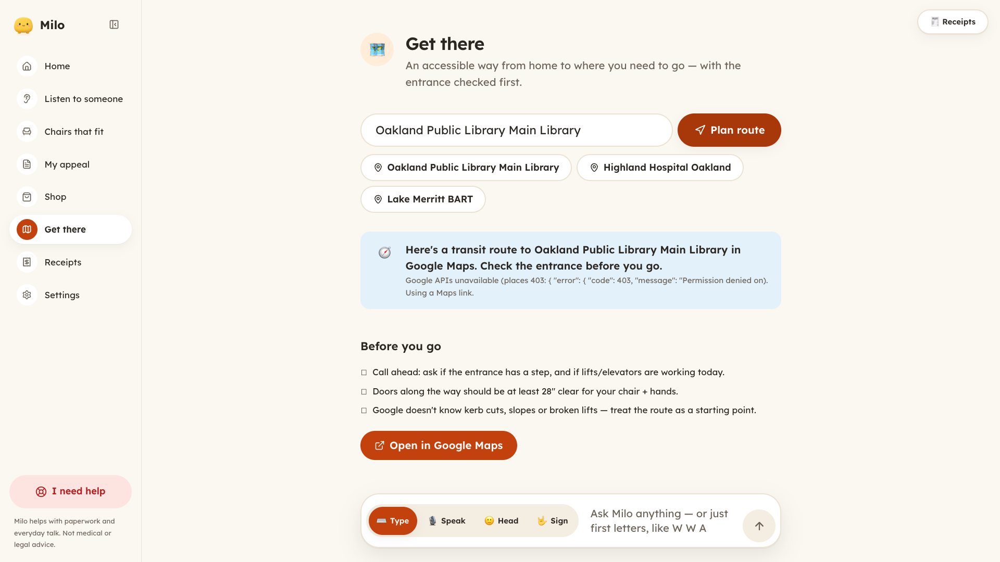
●Live: no hands, no voice
Head mode · steering with the nose
Sign mode · fingerspell, then sign YES
Milo
A personal AI agent that’s actually for everyone.
How Milo uses each sponsor

Claude
Grounded answers, and chair measurements from a photo.

Superlinked SIE · Qwen
The brain: turns first letters into full sentences, and ranks chairs to her needs.
ElevenLabs
Two human voices: Milo’s, and the one that speaks for her.
Senso
Her policy and denial letter, so every answer cites a source.
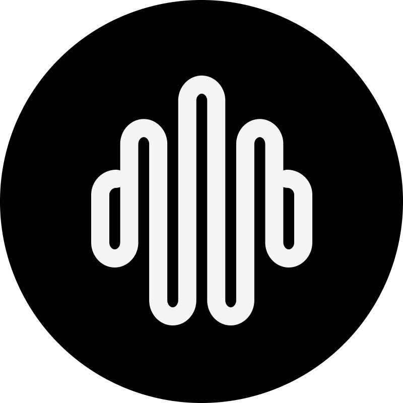
Cognee
Memory of what she usually says, so predictions get faster.

Airbyte
Syncs her inbox, so the denial letter arrives on its own.
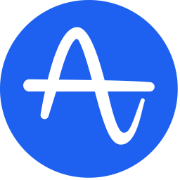
Amplitude
Measures moves per sentence, so each release costs her less effort.
Statsig
Live settings, A/B tests, and sign mode behind a feature gate.
 Head and hand tracking run on-device with MediaPipe. Video never leaves the laptop.
Head and hand tracking run on-device with MediaPipe. Video never leaves the laptop.Personal AI agents are supposed to be for everyone. But are they, really?
Most apps assume you can type, click, talk and hear. More than a billion people can’t do all of those.
Meet Milo. A personal AI agent you can use with your keyboard, your voice, your head, or your hands.
First, Milo asks what’s hard for you, and reshapes itself around you.
Spell just the first letters. Milo predicts the rest, and asks before it acts.
Milo knows your body, your chair, and your home. It checks every chair against your narrowest door, before you ever buy it.
Denied by insurance? Milo drafts the appeal, a strict reviewer checks it, and Milo files it. With a receipt for every single step.
It won’t let you buy a chair that won’t fit. And anything big goes to your caregiver first.
And when you go out, Milo plans a route your wheelchair can actually take. No stairs. Real ramps. Working elevators.
This is Milo, live. No hands. No voice. Just a nose, and a nod.
Milo. A personal AI agent that’s actually for everyone.